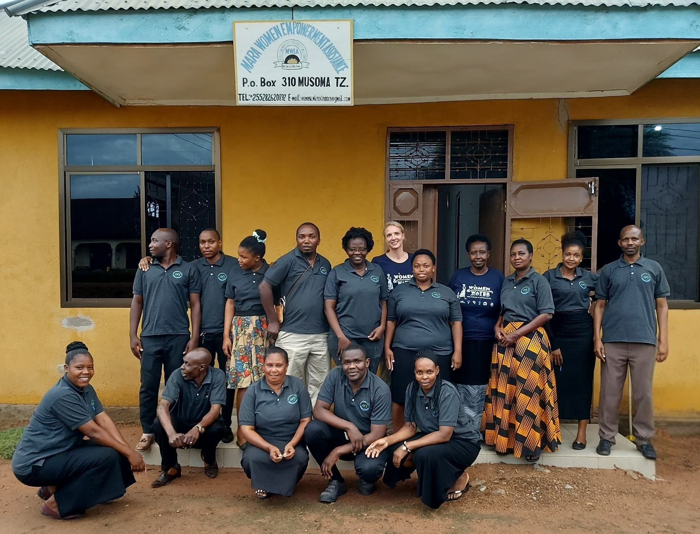
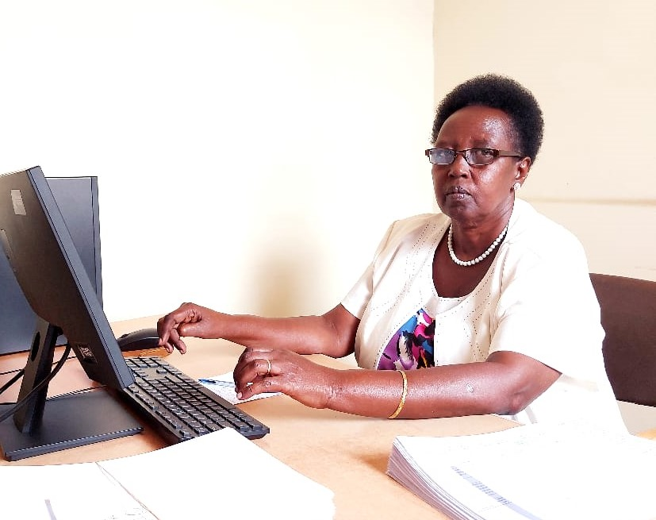
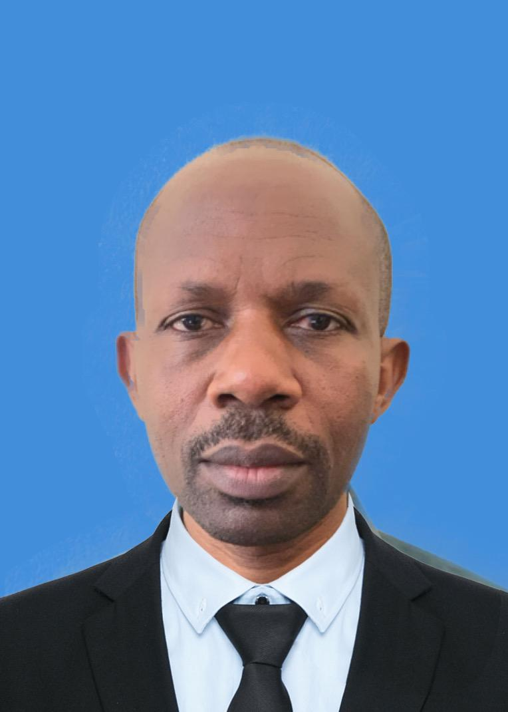
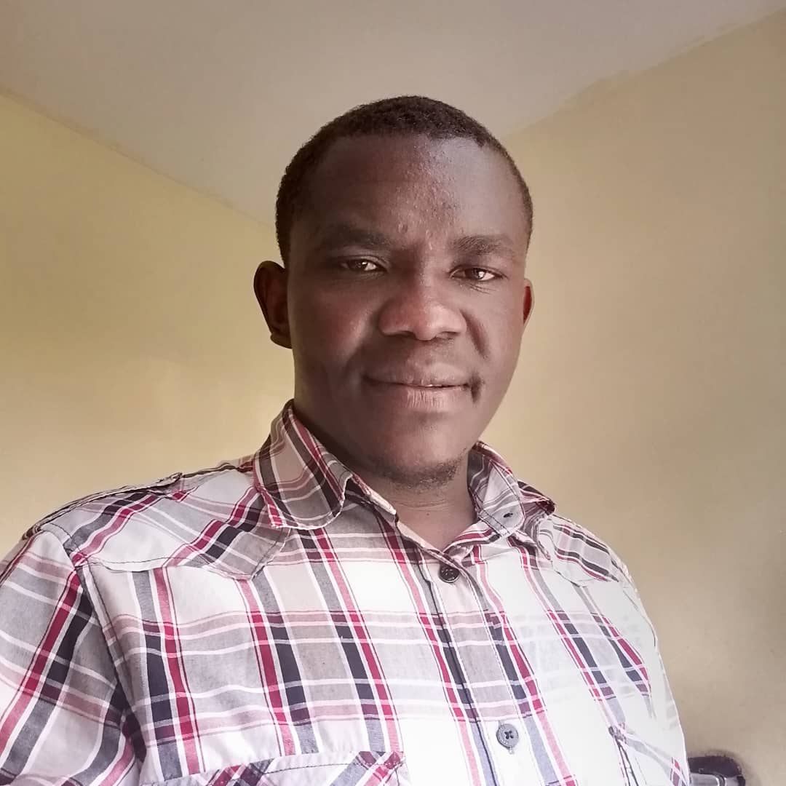

Discover our story, mission, and commitment to empowering communities in the Mara region since 2004.
Mara Women Empowerment Assistance (MWEA) is a grassroots Non-Governmental Organization (NGO) registered in Tanzania in 2004 under the Companies Ordinance-Chapter 212 of the Laws of Tanzania.
The organization's headquarters is in Musoma, located along the shores of Lake Victoria in the Northern region of Tanzania. MWEA was founded by three women and two men to support both urban and rural communities, with a particular focus on women and youth engaged in micro-enterprises.
Year Registered
Villages Reached
Active Programs
Beneficiaries Reached

To empower communities through innovative microfinance services, community development projects, and capacity-building initiatives while advocating for gender equality, environmental sustainability, and inclusive economic growth.
A self-sustaining, equitable society where every individual, particularly marginalized groups, can contribute to and benefit from economic growth and environmental conservation.
The principles that guide everything we do.
We operate with openness and honesty in all our dealings, ensuring accountability to our stakeholders.
We treat every person with dignity, kindness, and respect, understanding the unique challenges they face.
We are deeply rooted in the communities we serve, listening to their needs and co-creating solutions.
We respond quickly and effectively to the needs of our communities and stakeholders.
We are committed to delivering measurable, sustainable outcomes that improve lives.
We build trust through consistent, dependable service and follow-through on our commitments.
Key milestones in our history of empowering communities since 2004.
MWEA was officially registered in Tanzania under the Companies Ordinance - Chapter 212 of the Laws of Tanzania, with certificate number 49692.
MWEA was founded by three women and two men to support urban and rural communities, with a focus on women and youth engaged in micro-enterprises.
Launched our education sponsorship program, supporting 15 vulnerable girls to attend secondary school.
Established our first vocational training center offering tailoring and handicrafts programs for women.
Partnered with local farmers to introduce sustainable agriculture techniques, benefiting over 200 families.
Launched the Women and Water for Change in Communities (WWCC) project, funded by the Coca-Cola Foundation and implemented by IHE Delft.
Constructed our first water pans to provide clean water to rural communities, improving health and reducing time spent collecting water.
Operating in 25 villages across Mara Region with 15 active programs, serving over 1,500 women and youth annually across Butiama, Tarime, and Rorya districts.
Launched a 5-year sustainable waterpans project (2023-2027) funded by the Dutch government, focused on water and health, building local capacities in Tanzania and Kenya.
MWEA continues to empower communities through microfinance, entrepreneurship training, and community-driven projects across the Mara region, with plans for further expansion.
Experienced, community-rooted leaders turning local knowledge into lasting opportunity across Mara.
Our leadership combines practical experience, accountable planning, and a deep belief in the strength of the communities we serve.

Executive Director
Mary provides strategic direction for MWEA, guiding programmes, partnerships, and organisational growth across the Mara region. Her leadership keeps the organisation focused on expanding economic opportunity, strengthening women and youth, and building practical solutions that improve the wellbeing of families and communities.

Planning & Operations Officer
Johanes strengthens programme planning and delivery, helping teams turn community priorities into practical, measurable action. He supports coordination, accountability, and continuous learning so that MWEA projects respond to local needs, use resources responsibly, and create meaningful results for the communities we serve.

Head of Community Services, Programme Development & Partnerships (CODEP)
Msamba leads community services and programme partnerships with a focus on strengthening women, girls, young people, and local institutions. His work is grounded in the belief that communities understand their realities best and have the voice, leadership, and agency to shape lasting change.